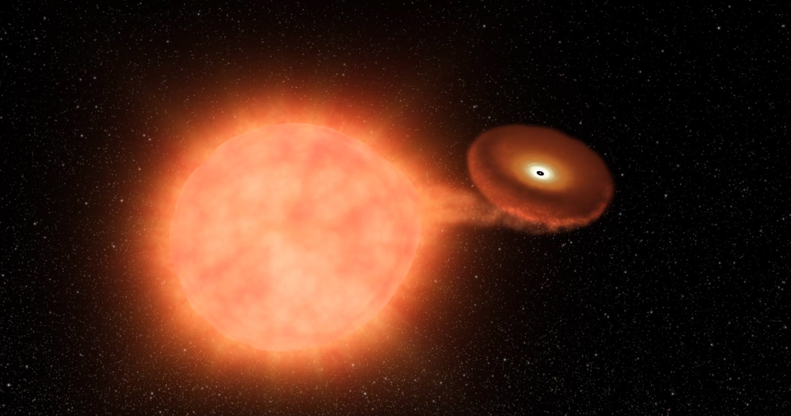

Forrige side🙂 🙁avstandsindikatorer
 Massen av stjerna som eksploderer er dermed alltid omkring 1.4M⊙, og energien som frigjøres er alltid omtrent den samme. Ved å se på eksplosjoner i galakser der man har observert Kefeider (og som man derfor kjenner avstanden til), har man kunnet måle luminositeten (og dermed den absolutte størrelseklassen M) til disse eksplosjonene. Denne er MV ≈ MB ≈ 19.3 med et avvik på opp til 0.3. Ved nøye observasjoner av mange slike supernovaer i galakser med kjent avstand kan man nå beregne også dette lille avviket ved å bruke formen på lyskurven. Absolutt størrelseklasse til en slik eksplosjon kan dermed bestemmes ganske nøyaktig som gjør disse til gode standardlyskilder for å finne avstanden til galaksen som supernovaeksplosjonen skjer i ved: $$m-M=5\log{\frac{r}{10\mathrm{pc}}}$$ Supernovaer av type Ia er svært lyssterke og kan observeres i galakser som er over 1000Mpc unna. De kan altså brukes til å bestemme avstanden til svært fjerne og lyssvake galakser, milliarder av lysår borte. MEN, for å kunne bruke metoden må vi være så heldig at det faktisk skjer en slik supernova der! Det er den store ulempen med denne metoden. Neste side